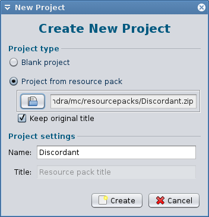
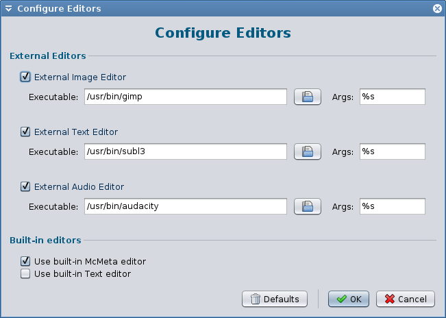
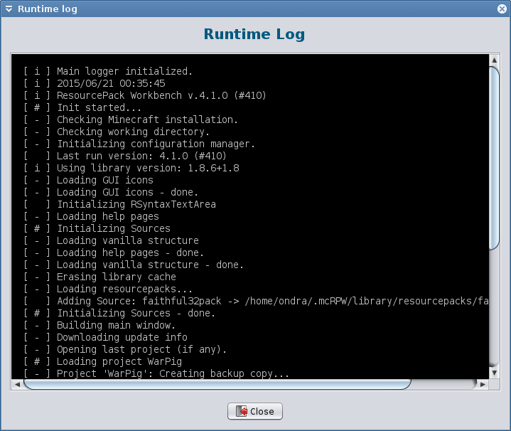
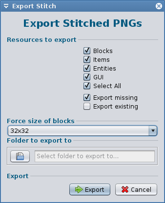
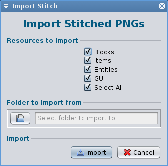

RPW is a tool for building and editing Minecraft resource packs.
It shows you the pack structure and lets you replace or edit the files.
RPW doesn't include an image editor or model creator — but you can set it to use your preferred external one.
A good choice is for example GIMP or Paint.net
All important RPW news will be announced on Twitter:
Arch Linux users can install RPW from the AUR
RPW is a Java application. Whichever download you choose, you need Java installed.
Latest version: 4.5.2 - for MC 1.12.2 Latest beta: 4.5.3 Beta 2 - for MC 1.13 snapshots
Alternatively, you'll find the latest release on GitHub.
To report a bug or crash, please start a new issue here:
For help with using RPW, please join our Gitter:
We'll receive a notification and get to you ASAP.
If you have an idea for RPW, or wanna try fix a bug, please, by all means, go for it!
We'll happily merge anything useful!
Wanna be famous? Review RPW and send us a link ;-)
RPW can create a blank project, or a project from existing resource pack.

On Windows, you'll have to locate your "exe". On Linux, just the binary name would suffice.

The log view is available from the Help menu.
It can help with analyzing bugs, and you can check there what exactly is RPW doing.
RPW also saves it's log into a file in the working directory (~/.mcRPW)

RPW contains a utility for stitching and un-stitching textures.
Do not confuse it with the old Mojang-provided tool - this is something differnet.
It's useful when you feel like editing more textures at once, and don't want to reopen the editor all the time. But not everyone will like it, of course.
 
Website by MightyPork